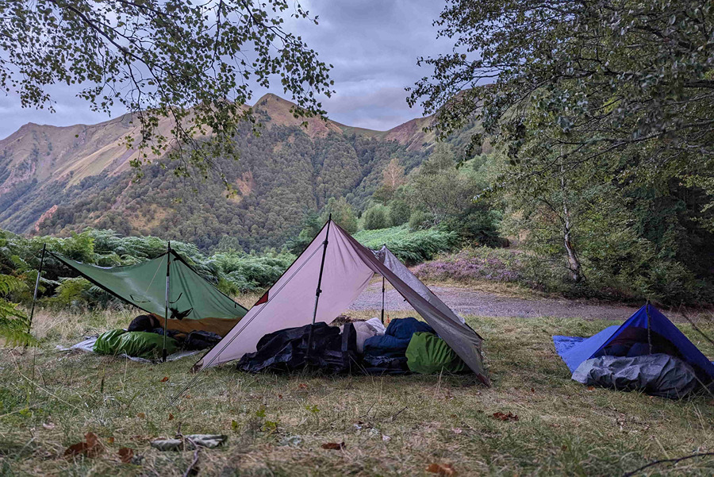
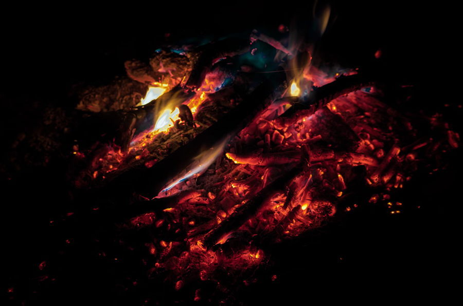

---
layout: default
title: Le stage - Marche et cueille
--- 

<div id="page-stage-survie-douce" class="container-xxl py-5">
    <section style="height: 80px;margin-top: -80px;"></section>
    <section id="sabriter" class="row">
        <div class="col-md-6">
            
        </div>
        <div class="col-md-6 text-stage">
            <h2>S'abriter</h2>
            <p>Évoluer sur le terrain à la recherche d'un espace propice à vos bivouacs. Évaluer les risques qui compromettraient votre récupération physique et psychique. Pente et irrégularité du terrain, vent, humidité, pluie, orage, ruissellement de l'eau, température, ensoleillement, proximité avec l'humain.
                <br>
                <br>
                Accoutumer-vous à dormir à la belle étoile, en toute sécurité, en plaine, en montagne et en forêt.
                <br>
                <br>
                Avec un simple tarp (bâche de randonnée) vous apprendrez à configurer un abri fiable, léger et modulable. </p>
        </div>
    </section>
    <section id="cueillir"  class="row">
        <div class="col-md-6 order-first order-md-2">
            
        </div>
        <div class="col-md-6 text-stage">
            <h2>Cueillir</h2>
            <p>Apprendre les règles de base de la cueillette de plantes sauvages.
            <br><br>
            Les reconnaitre par une approche multi-sensorielle (environnement, aspect, texture, odeur, saveur), les cueillir et les préparer en toute sécurité.
            <br>  
            Prendre conscience des risques (Confusion possible, plante toxique, risque parasitaire) Dépasser ses peurs quand à cette pratique, je serai là pour vous aiguiller et contrôler chacune de vos cueillettes.
            <br><br>
            S'initier au vocabulaire botanique (description des plantes) et à sa taxonomie (organisation des plantes par lien généalogique, famille - genre - espèce)</p>
        </div>
    </section>
    <section id="faire-un-feu" class="row">
        <div class="col-md-6">
            
        </div>
        <div class="col-md-6 text-stage">
            <h2>Faire un feu</h2>
            <p>Anticiper les risques environnementaux et apprendre à faire un feu en toute sécurité.
                <br><br>
                Vous apprendrez à repérer et cueillir les différents allume feu naturels ainsi que les essences de bois épargnées par l'humidité, à construire le foyer, l'allumage et l'alimentation en bois.
                <br><br>
                Nous cuisinerons en toute discrétion avec un minimum de bois pour réduire les risques d'incendie et de pollution.</p>
        </div>
    </section>
    <section id="cuisine-sauvage" class="row">
        <div class="col-md-6 order-first order-md-2">
            
        </div>
        <div class="col-md-6 text-stage">
            <h2>Cuisine sauvage</h2>
            <p>Les repas se concocteront à partir de nos cueillettes complétées de différentes farines, d'huiles et de sel. Vous découvrirez de nombreuses plantes aux saveurs nouvelles et plusieurs façons de les préparer. Ce sera également l'occasion de travailler sur nos habitudes alimentaires, de se désaccoutumer des divers excitants et addictions de notre alimentation moderne.
            <br><br>Pesto d'alliaire officinal et d'Origan vulgaire. Beignet d'Épiaire des bois et de Pulmonaire, chapati au Plantain et à l'Impératoire ou encore salade à base de Silène vulgaire, Gratteron, Pissenlit, Égopode et Thym serpolet.
             <br><br>Les plantes sauvages comestibles sont innombrables et différentes selon la saisons et les conditions pédoclimatiques.</p>
        </div>
    </section>
    <section id="le-groupe" class="row">
        <div class="col-md-6">
            
        </div>
        <div class="col-md-6 text-stage">
            <h2>Le groupe</h2>
            <p>Le nombre de participants sera de 8 et 10 personnes afin de privilégier la transmission et limiter l'inertie de groupe.
            <br><br>En priorité, vous développerez une présence à vous même.
            <br><br>Cependant, vous veillerez, à votre manière, à vous impliquer dans la cohésion du groupe, à soutenir éventuellement une personne et à acceptez l'aide dont vous pourriez avoir besoin.
            <br><br>Vous ferez la rencontre de personnes d'horizons différents ayant en commun un fort désir de nature. Nous apprendrons à nous connaitre davantage dans l'expérience que par le discours.
            <br><br>Plusieurs temps d'échange en groupe ponctueront la semaine pour permettre à chacun de partager ses observations, ses attentes et ses besoins.</p>
        </div>
    </section>
    <section id="legerete" class="row">
        <div class="col-md-6 order-first order-md-2">
            
        </div>
        <div class="col-md-6 text-stage">
            <h2>Légèreté</h2>
            <p>Vous partirez avec un sac à dos le plus léger possible car nos abris seront minimalistes et l'essentiel de notre nourriture cueillie sur place. Vous apprendrez les techniques de la marche légère et son matériel en amont, dès la préparation de votre sac.
            <br><br>Au départ, nous prendrons un temps pour nous répartir les charges, vous apprendrez à remplir et régler votre sac pour l'adapter au mieux à votre morphologie.</p>
        </div>
    </section>
    <section id="itinerance" class="row">
        <div class="col-md-6">
            
        </div>
        <div class="col-md-6 text-stage">
            <h2>Itinérance</h2>
            <p>Nous marcherons ensemble comme marchent les nomades, l'esprit alerte et glaneurs. Nous arpenterons parfois en silence, au rythme de notre souffle. Pas à pas, nous cheminerons en nous-même.
                <br><br>Notre point de vue sera contemplatif à la conquête du lointain, puis attentif, dégringolant dans la toile de la forêt dense. Nous oublierons les kilomètres pour ressentir la juste dimension du monde.
                <br><br>Vous apprendrez à vous connaitre dans l'effort, à moduler votre marche, à poser et repousser vos limites. A vous situer, à lire le paysage et contourner ses obstacles, avec et sans carte.</p>
        </div>
    </section>
    <section id="ecologie-sensible" class="row">
        <div class="col-md-6 order-first order-md-2">
            
        </div>
        <div class="col-md-6 text-stage">
            <h2>Écologie sensible</h2>
            <p>Quelques ateliers ponctueront le stage pour faciliter l'ancrage au présent, l'immersion dans le paysage, le lien aux autres et la connaissance des plantes sauvages.
            <br><br>
            <ul>
            <li> Détente, étirement avant ou après la marche</li>
            
                <li> Marche pieds nus - Marche guidée les yeux fermés
            </li>
                <li> Découverte des plantes à travers chaque sens 
            </li>
                <li> Compréhension de l'environnement végétal 
            </li>
                <li> Observation botanique avec une loupe
            </li>
                <li> Confection d'une cuillère en bois 
            </li>
                <li> Tissage d'une corde en fibre végétale
            </li>
                <li> Marche silencieuse au clair de lune 
            </li>
                <li> Écoute attentive de l’univers sonore
            </li>
                <li> Temps d'exploration en autonomie
            </ul></li>
            </p>
        </div>
    </section>
</div>
